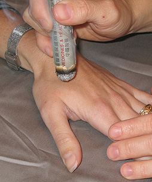

Conditions We Treat
Oriental medicine is not a substitute for Western medicine. They are complementary systems. Many conditions are alleviated very rapidly by Oriental medicine, other conditions that have arisen over a number of years may only be relieved by slow, steady progress. As with any form of healing, the patient's attitude, diet and lifestyle will affect the outcome of treatment. Some commonly treated conditions:
Gastrointestinal Disorders: food allergies, peptic ulcer, chronic diarrhea, constipation, indigestion, gastritis, colitis, and irritable bowel syndrome.
Urogenital Disorders: incontinence, urinary tract infections, prostatitis, sexual dysfunction and infertility.
Gynecological Disorders: menstrual difficulties (irregular, heavy or painful menstruation), PMS, morning sickness, fibrocystic disease, menopause problems.
Muscle and Joint Pain: arthritis, tendonitis, bursitis, low back pain, neck and shoulder pain, whiplash, sciatica, and TMJ.
Respiratory Disorders: emphysema, sinusitis, asthma, allergies and bronchitis.
Circulatory Disorders: high blood pressure, angina, muscle cramps, anemia, palpitations, atherosclerosis.
Immune System Disorders: chronic fatigue syndrome, AIDS, rheumatoid arthritis, candidiasis, lupus, fibromyalgia.
Endrocrine Disorders: diabetes, hyper/hypothyroidism.
Neurological Disorders: stroke rehabilitation, multiple sclerosis, trigeminal neuralgia, numbness, tingling, and dizziness.
Headache: migraine, tension, sinus, and cluster.
Emotional Problems: stress, insomnia, depression, anxiety, phobias, compulsive behavior, irritability and eating disorders.
Addictions: alcohol, nicotine, sugar, medications and recreational drugs.Click on the more info to learn about the Smoking Cessation program. More info...
Pediatrics: bedwetting, asthma, hyperactivity, and ADD.
Traditional Chinese medicine is a preventative medicine, it is just that in the Western culture, right now, we are usually playing catch up and treating a condition that has gotten away from us. Patients should feel free to come in to prevent disease states and create better balance of the body, mind and spirit.